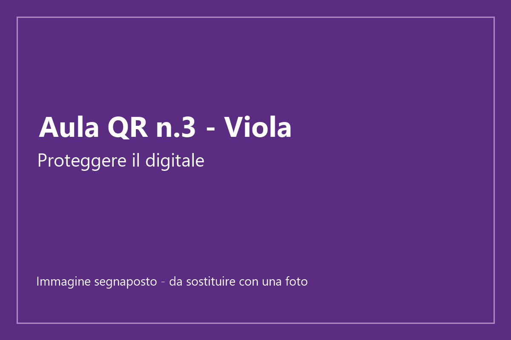

Ogni giorno aziende, persone e istituzioni producono e condividono dati: proteggerli è diventato uno dei compiti più importanti del mondo del lavoro.
Il corso AI Cybersecurity Specialist (intelligenza artificiale applicata alla sicurezza) forma tecnici capaci di gestire e proteggere informazioni e sistemi informatici.
Gli studenti imparano a riconoscere vulnerabilità, gestire policy di sicurezza, affrontare minacce tecniche, umane e organizzative, e documentare ciò che scoprono.

Ultimo aggiornamento: 13/11/2026